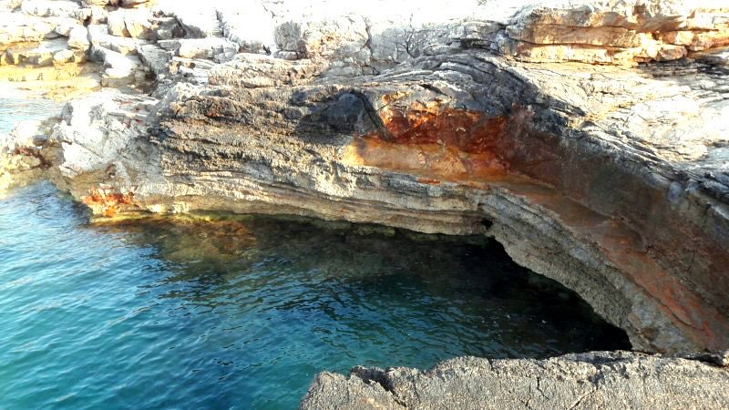
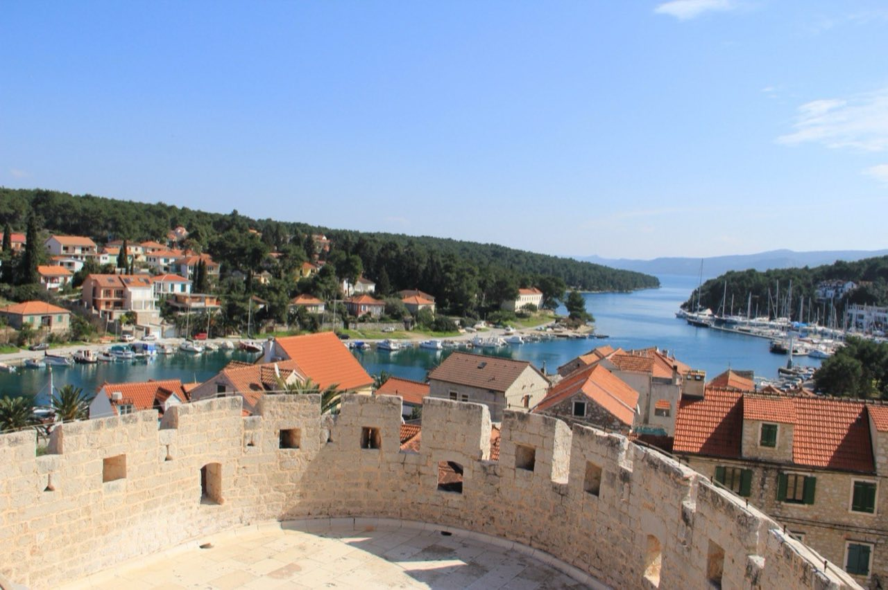
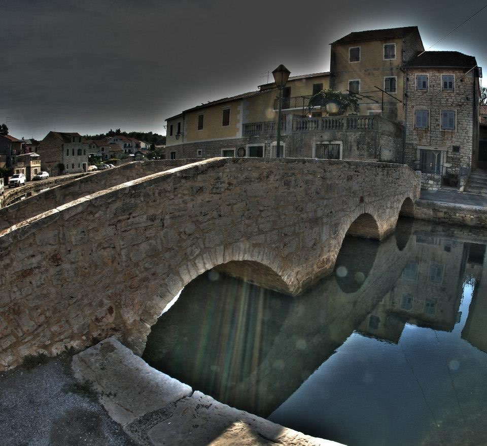
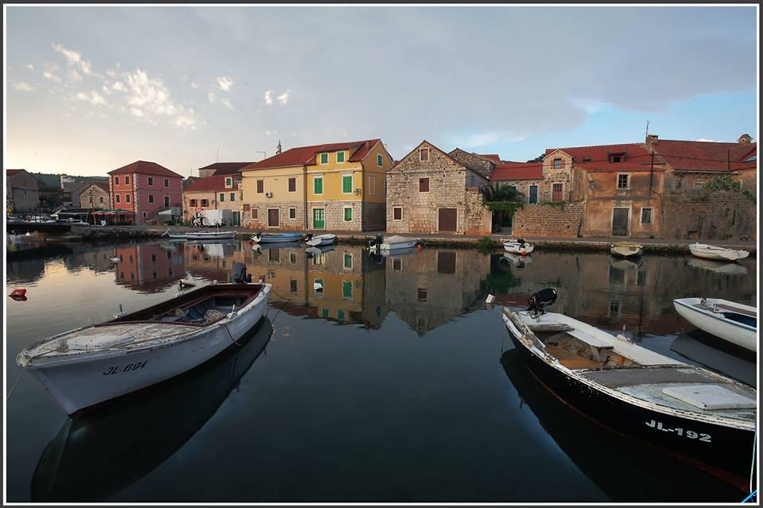
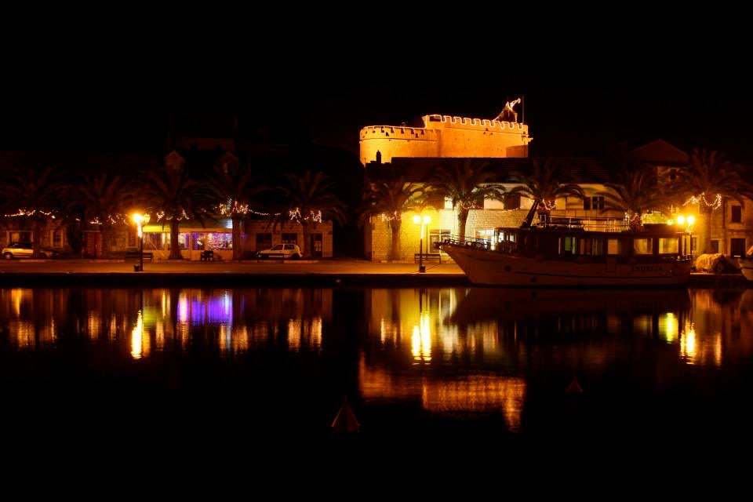
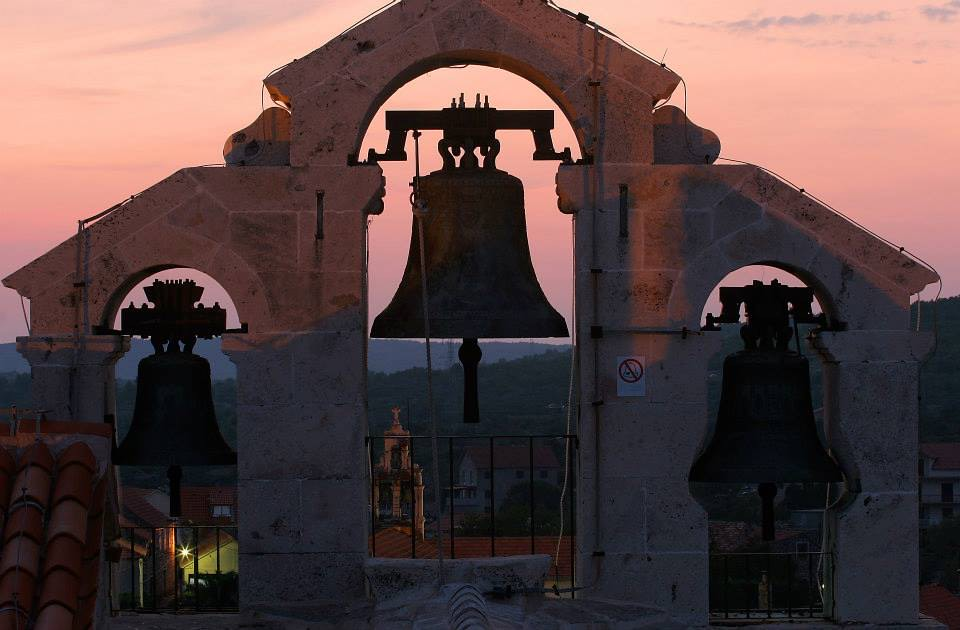
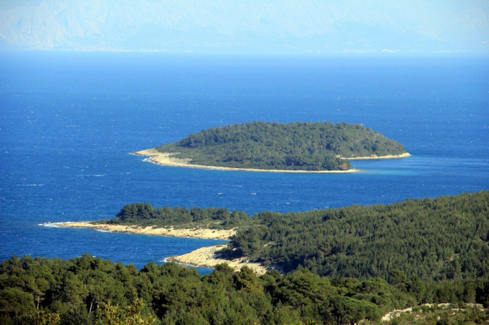
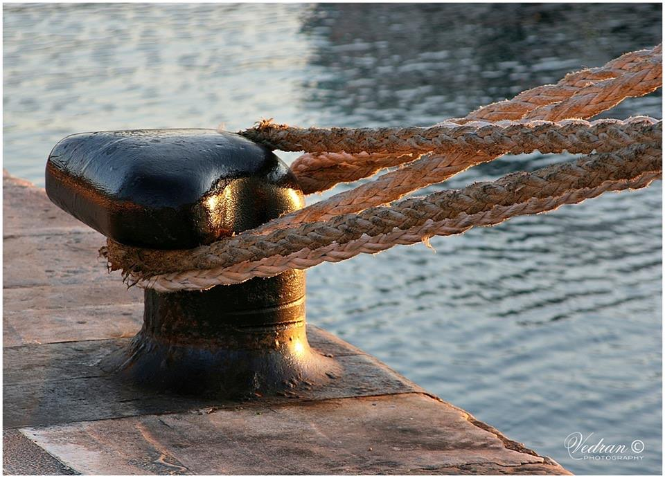

Apartman Balun
Balun
Na sjevernoj strani rta Glavice, prirodni amfiteatar ravnih kamenih ploča. Desetak minuta šetnje od restorana Soline.

Najmanje mjesto na otoku, uz uski i vijugavi fjord, neobičan kao i sva čudesa otoka Hvara.
Vrboska je osnovana u 15. stoljeću, a zbog brojnih malih mostova često je zovu Mala Venecija.
Od ulaza, najšireg dijela mjesta okruženog gustom borovom šumom, Vrboska se vijugavo sužava do kanala na čijim su obalama slikovite građevine u gotičkom, novorenesansnom i baroknom stilu. Uske zavojite ulice, borovi, kamene kuće i otočić usred uvale podsjećaju na stare razglednice.
Mjesto čine dva dijela: Pjaca na istoku i Podva na zapadu.






Područje oko Vrboske bilo je naseljeno još u srednjem vijeku, o čemu svjedoče rimske ruševine. Mjesto je naraslo iz ribarskog sela i luke Vrbanja, po kojem je dobilo ime.
Bogata ribarska tradicija i danas se osjeti u mjesnoj kuhinji: zdrava hrana s okolnih polja i svježe ulovljena riba s domaćim maslinovim uljem i aromatičnim začinima. Uz to čaša jednog od poznatih hvarskih vina.
Ovo malo mjesto vratit će život umornom tijelu i potreban mir svačijoj duši.

Svaki apartman Šerić nosi ime jedne od ovih plaža.

Na sjevernoj strani rta Glavice, prirodni amfiteatar ravnih kamenih ploča. Desetak minuta šetnje od restorana Soline.

Najbliža plaža apartmanima: uvala u borovoj šumi, zaklonjena od sjeverozapadnjaka, s izvorima pitke vode i prirodnim žalom.

Male skrivene plaže između Maslinice i Zavale, s kamenim pločama koje kupačima daju intimnost.

Pogled na Brač, velike ravne ploče i malo žalo, surf centar i restoran. Dvije minute autom.

Rt s plitkim morem, pravi izazov za ronioce. U blizini je ronilački centar.